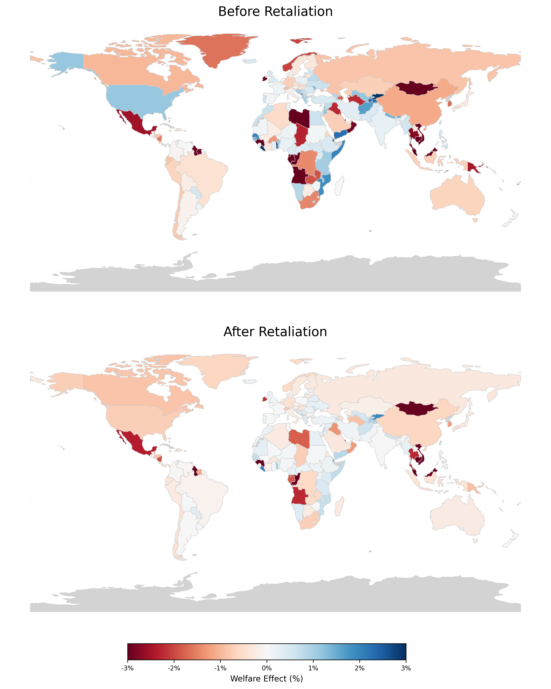

Making America Great Again? The Economic Impacts of Liberation Day Tariffs
Anna Ignatenko (Norwegian School of Economics)
Ahmad Lashkaripour (Indiana University, CESifo, CEPR)
Luca Macedoni (University of Milan, CESIfo)
Ina Simonovska (UC Davis, NBER, CEPR, CESIfo)
Journal of International Economics · September 2025
Read PDF · Markdown source · Reader view · Working paper
Abstract. On April 2, 2025, President Trump declared "Liberation Day," announcing broad tariffs to reduce trade deficits and revive U.S. industry. We analyze the long-term economic impacts of these tariffs. If trading partners do not retaliate, the tariffs could decrease the U.S. trade deficit and improve its terms of trade, yielding modest welfare gains when tariff revenues reduce the income tax burden for American workers. However, reciprocal retaliation results in net welfare losses for the U.S. economy. We derive the unilaterally optimal tariff policy and find that the USTR proposed tariffs, based on bilateral trade deficits, diverge markedly from the optimal design. The optimal tariff is 19%, uniformly applied across all trading partners, and determined solely by the aggregate trade deficit, rather than bilateral imbalances. Under optimal foreign retaliation to the USTR tariffs, U.S. welfare declines by up to 3.4% when accounting for input-output linkages, while global employment contracts by 0.58%.
1 Introduction
On April 2, 2025, President Donald Trump proclaimed “Liberation Day,” implementing tariffs on imports from virtually all countries, with the stated goal of revitalizing American industry and reducing trade deficits. These tariffs include a 10% baseline on all imports, adjusted to a higher level for countries that run a trade surplus with the U.S., e.g., 20% for European Union products and 54% for Chinese goods (see USTR Reciprocal Tariff Calculations), with exceptions for USMCA trade partners as well as certain products, such as automobiles, steel, aluminum, and smartphones.See The White House Fact Sheets for official summary of tariff schedules and exemptions. As of April 9, tariffs on all countries (but China) have been reduced to 10% for 90 days. As of May 12, the reciprocal tariff on China is 10% in addition to the 20% fentanyl tariff. As of May 30, the 10% tariffs on all nations (except USMCA-compliant products and industries subject to Section 232 tariffs) are temporarily in place, as they have been legally challenged. While the administration asserts that these measures will bolster domestic manufacturing, protect American jobs and eliminate the U.S. deficit, many economists and industry leaders warn of potential negative consequences. This article examines the economic implications of the Liberation Day tariffs, analyzing their potential impact on the U.S. and the global economy.
Model and Methods. We develop a quantitative trade model that incorporates three essential elements: tariff pass-through differing from unity, trade imbalances, and employment effects under different tariff-revenue rebate specifications. These features make the model particularly well-suited for analyzing the Liberation Day tariffs, which were designed based on perceived pass-through rates and targeted reductions in bilateral U.S. trade deficits with trade partners. In our framework, trade deficits arise from two sources: (i) exogenous transfers, capturing intertemporal substitution or external factors outside of the model, and (ii) local labor embodied in exports, because export penetration requires local labor services from the destination country. While the former component is unaffected by tariff changes, the latter adjusts endogenously to policy change. We focus on a single-sector model, consistent with the uniform application of Liberation Day tariffs across goods, excluding a few exceptional cases under Section 232. We also conduct robustness checks by introducing multiple sectors and an input-output structure.
Within our single-sector framework, we derive the theoretical formula for unilaterally optimal tariffs—i.e. tariffs that maximize U.S. welfare—and show that they are non-discriminatory across trading partners, and depend on the variety-adjusted tariff pass-through, the trade elasticity, and the aggregate trade deficit. Crucially, the optimal tariff is independent of bilateral trade imbalances, standing in sharp contrast to the proposed Liberation Day tariffs, which were explicitly designed to vary based on the size of each country’s bilateral trade deficit with the U.S.
We calibrate our model to bilateral trade and GDP data for 194 countries from 2023, and employ exact hat algebra to simulate the long-term counterfactual impacts of tariffs under various scenarios. Our simulations require information on several structural parameters, most notably the trade elasticity and the tariff pass-through rate. We adopt these values from Simonovska and Waugh (2014a) and Cavallo et al. (2021), both of which are referenced in the Executive Summary of the Reciprocal Tariff Calculations released by the Office of the United States Trade Representative (USTR). In robustness exercises that employ a multi-sector model, we restrict the analysis to 181 countries with sectoral trade and value-added data available for 2019, and estimate sectoral trade elasticities following Fontagné et al. (2022).
Summary of results. We find that tariffs imposed by the U.S. could improve its terms of trade and reduce its trade deficit, provided, critically, that trading partners refrain from retaliating. Across various scenarios and model specifications, we estimate that the USTR’s proposed tariffs could reduce the trade deficit by approximately 11-19 percent. However, the associated welfare gains are modest and even non-existent once input-output linkages are considered, or if the reduction in income-tax burden due to tariff revenues is excluded. Furthermore, these limited beggar-thy-neighbor benefits to the U.S. come at substantial costs to its trading partners, particularly Canada and Mexico, Ireland and Norway in Europe, and several Southeast Asian economies such as Thailand, Malaysia and Vietnam, for whom exports to the U.S. constitute a significant share of GDP.
The modest welfare gains from the USTR tariffs, even without retaliation, reflect their flawed design. These tariffs are not structured optimally to maximize the terms of trade gains, revenue collection, or deficit reduction. An optimally designed tariff would involve a uniform rate of approximately 19% applied equally across all trading partners. Such a non-discriminatory tariff would increase the welfare gains for the U.S. by 60%, while also generating higher revenues and achieving larger reductions in the trade deficit.
Critically, any U.S. welfare gains disappear if trading partners retaliate bilaterally. In this case, the U.S. not only forfeits initial gains, but also ends up significantly worse off. When accounting for input-output linkages, the U.S. suffers a welfare loss of 3.38 percent. Although retaliation mitigates some losses for U.S. trade partners, it does not eliminate them; they still face welfare losses of around 1.17 percent. The resulting tariff war constitutes a Prisoner’s Dilemma situation, harming all parties involved. Ultimately, global trade falls by at least 4.9 percent relative to GDP, and global employment drops by up to 0.58 percent.
Relation to the literature. We view our analysis as one that describes the long-run; i.e. an equilibrium in which tariffs are permanent and factor prices fully adjust to their equilibrium levels (see Alessandria et al. (2025b) for effects of temporary vs. permanent tariffs on the deficit and GDP, and Auclert et al. (2025) and Rodríguez-Clare et al. (2025) for an analysis with nominal rigidities). As such, our analysis abstracts from any frictions, most notably labor/inventory adjustment frictions and supply chain restructuring frictions such as relationship-building costs. These transitional dynamics would further reduce welfare gains.
Additionally, we do not model any uncertainty regarding the implementation or the persistence of tariffs (Alessandria et al. (2025a), Global Trade Outlook, April 2025), nor do we capture intertemporal decisions. Specifically, tariffs can reduce investment and the capital stock (Cuñat and Zymek (2024b), Baqaee and Malmberg (2025)). Furthermore, we abstract from the analysis of financial markets or monetary policy responses (Bianchi and Coulibaly (2025); Kalemli-Ozcan et al. (2025); Monacelli (2025)), so we cannot quantify any losses in income and wealth that may occur due to changes in asset prices (see Itskhoki and Mukhin (2025) for asset valuation effects on deficits). Thus, our findings should be interpreted as a lower bound on the potential costs of the Liberation Day tariffs to the U.S. and the rest of the world.
We view our analysis as a first attempt to quantify the welfare impact of the Liberation Day tariffs.A growing literature has examined the consequences of the 2018-2019 U.S.-China trade war (e.g.Amiti et al. (2019, 2020); Flaaen and Pierce (2019); Waugh (2019); Fajgelbaum et al. (2020); Ma et al. (2021, 2025); Caliendo and Parro (2023).) Methodologically, we relate to Ossa (2014) and Lashkaripour (2021), who employ quantitative trade models to assess the welfare costs of tariff wars. Our tariff revenue analysis complements recent work, including Lashkaripour (2020) and Alessandria et al. (2025b).
2 Model
We employ a generalized trade model consistent with multiple micro-foundations in the spirit of Demidova et al. (2024). This framework enables us to characterize global trade in terms of international supply and demand of labor services.
Demand for Labor Services. There are \(N\) countries indexed by \(i,j,n = 0,1,\dots,N\). Let \(w_i\) and \(L_i\) represent the wage and labor supply in country \(i\), \(A_i\) the constant productivity shifter of country \(i\), \(d_{ni}\) the ad-valorem trade cost from country \(n\) to country \(i\), and \(t_{ni}\) the ad-valorem tariff imposed by country \(i\) on imports from country \(n\). Without loss of generality, assume \(d_{ii} = 1+t_{ii} = 1\).
Trade shares are defined as \(\lambda _{ni} \equiv X_{ni}/E_i\), where \(X_{ni}\) is country \(i\)’s expenditure on varieties from country \(n\), with \(E_i=\sum _{j} X_{ji}\) denoting total expenditure. As elaborated in Appendix A, in a Melitz-Pareto model with destination-specific markups, free entry, and fixed costs paid in local labor, trade shares can be specified as:
This expression also encompasses a range of standard models, such as Armington, Eaton-Kortum, and Krugman, as special cases. The formulation of bilateral trade shares involves three structural parameters, defined as follows:
- \(\varepsilon\): the trade elasticity, i.e., the elasticity of trade flows with respect to trade costs \(d_{ni}\);
- \(\psi\): the scale elasticity—the elasticity of aggregate real TFP with respect to employment size, \(L_{n}\)—capturing the variety gains from firm entry;
- \(\varphi _i\): the pass-through of tariffs to the price index of imported varieties in destination \(i\), which is composed of two components: the firm-level pass-through, denoted by \(\tilde {\varphi }_i \leq 1\), and the import variety effect, given by \(\varphi _i - \tilde {\varphi }_i \geq 0\).We provide a micro-founded definition for \(\varphi _i\) in Appendix A and additional discussion in Appendix A.1. In general, we focus on the case where the tariff pass-through to firm-level prices is complete (i.e., \(\tilde {\varphi }_i = 1\)), with overshifting effects on the price index (i.e., \(\varphi _i > 1\)). However, we also experiment with incomplete firm-level pass-through.
The total demand for labor services in country \(i\) consists of two components: labor for domestic production and labor for fixed costs of firms (domestic and foreign) selling in \(i\). Specifically, let \(\nu _n\) represent the constant, but destination-specific, fraction of sales allotted to fixed cost payments to local labor at the location of sales, \(n\). Total demand for labor services in country \(i\) is:
The first term on the right-hand side captures the total labor demand associated with production and entry activities by domestic firms. For each destination \(n\), a fraction \(1 - \nu _n\) of sales is allocated to domestic labor costs related to these activities, while the remaining share \(\nu _n\) covers fixed costs paid to local labor from \(n\).Fixed cost are paid with variable profits, which are a fraction of sales. Thus, \(\nu _n\) is the product of two shares: the share of variable profits in sales times the share of variable profits depleted by fixed costs. The second term on the right-hand side, accordingly, represents the demand for country \(i\)’s labor due to fixed costs incurred by both domestic and foreign firms selling to market \(i\). As we demonstrate shortly, the assumption that fixed costs are expensed in destination-country wages yields bilateral deficits that are endogenous. This assumption is not new to the trade literature—Arkolakis (2010) develops a model where firms incur market access costs composed of domestic and foreign wages, estimating that foreign wages represent 71% of the total for French firms.While these payments should appear as service imports in the data, the Bureau of Economic Analysis recognizes that firms often employ foreign labor services via local affiliates. Thus, such payments to foreign factors are classified as domestic transactions. These payments are ultimately deducted from the profits repatriated to the parent company. So, our formulation effectively features cross-border claims on profits/assets, and is related to the portfolio model in Caliendo et al. (2018).
Tariffs reduce demand for foreign labor and boost demand for domestic labor by altering trade shares. These effects are captured by the tariff elasticity \(\frac {\partial \ln \lambda _{ni}}{\partial \ln (1+t_{ni})} = \varphi _i \cdot \varepsilon\). This elasticity indicates that changes in tariffs impact the import price index with elasticity \(\varphi _i\), and the resulting price adjustments affect trade flows with elasticity \(\varepsilon\). As explained below, we can simulate the counterfactual effect of tariffs with information on trade and production, and the parameters listed above, without taking a stance on the remaining parameters, \(A_n\) or \(d_{ni}\).
Supply of Labor Services. The representative agent in country \(i\) has preferences over consumption and labor given by \(U = C_i - \frac {\kappa }{\kappa + 1} L_i^{1 + \frac {1}{\kappa }}\), where \(C_i\) denotes consumption utility, whose maximization yields the equilibrium trade shares specified above. The parameter \(\kappa\) represents the labor supply elasticity. Labor supply in country \(i\) is, thus, given by
where \(\tau _{i}^L\) is the share of labor income that is deducted as income taxation, and \(P_i\) is the unit price index of the optimal consumption bundle, \(C_i\), which is given by
where \(\Upsilon _i\) is a constant formally defined in Appendix A.
General Equilibrium. General equilibrium is a set of wages such that labor supply equals demand
and goods’ markets clear so that total expenditure in country \(i\) is the sum of factor income and tariff revenue. In particular,
Following Dekle et al. (2007), \(\bar {T}_i\) is a lump-sum transfer, equal to a constant share of world GDP, with \(\sum _i\bar {T}_i=0\); and \(R_i\) denotes tariff revenues:
Trade Deficit. As shown in Appendix B, the trade deficit of country \(i\) is given by:
Two key factors determine \(D_i\) in our framework. The first is the exogenous lump-sum transfer \(\bar {T}_i\), which captures external mechanisms such as intertemporal substitution that lie beyond our model’s scope. Static trade models have traditionally attributed the entire deficit to these transfers (Dekle et al., 2007). The second source arises endogenously because the proceeds from exports are not fully paid to domestic labor; a portion is instead redirected to foreign labor to cover fixed exporting costs. These fixed costs effectively transfer a share of variable export profits to foreign workers. Since the share of fixed cost payments in sales, \(\nu _i\), is destination-specific, these transfers are asymmetric. They disproportionately benefit countries with higher market penetration costs, allowing their factor income to exceed sales—see Appendix B for details.
The aggregate deficit is the sum of the bilateral deficits, \(D_i = \sum _{n\neq i} D_{ni}\), where the bilateral deficit with partner \(n\) is defined as \(D_{ni} \equiv \frac {1}{1+t_{ni}}X_{ni}-\frac {1}{1+t_{in}}X_{in}\). The following proposition characterizes the determinants of bilateral deficits.
Proposition 1.Trade is bilaterally balanced if and only if the aggregate trade deficit is zero (\(D_i=0\) \(\forall i\)) and trade barriers are reciprocal (\(d_{in}=d_{ni}\) and \(t_{ni}=t_{in}\), \(\forall n, i\)).
Proposition 1, proven in Appendix C, clarifies that bilateral trade imbalances do not provide meaningful information about the reciprocity of trade barriers, including tariffs, when there are aggregate trade imbalances.In principle, asymmetric trade costs can affect bilateral trade imbalances without altering aggregate imbalances—particularly when aggregate imbalances are driven solely by external transfers (\(\bar {T}\)). However, in our framework, the endogenous component of the aggregate deficit is sensitive to trade cost asymmetries, which are shown to be empirically significant by Cuñat and Zymek (2024b). The intuition is straightforward: if a country runs an aggregate trade deficit, whether due to macroeconomic factors captured by \(\bar {T}_i\) or the foreign content embedded in overhead costs, then, by accounting identity, its trade must be imbalanced with at least some of its partners.
Corollary 1.If country \(i\) runs an aggregate trade deficit (\(D_i\neq 0\)), its trade with some partners will be bilaterally imbalanced, even if trade barriers are reciprocal.
Tariff Pass-through. In our model, \(\varphi _i\) represents the conditional pass-through of tariffs to the price index of imported varieties, holding aggregate wages, trade flows, and labor supply fixed. To clarify this, choose labor in country \(i\) as the numeraire. The price index for goods exported from country \(n\) to \(i\) is
where \(\mathcal {C}_{ni}\) encompasses all the constant price shifters. The total derivative of prices with respect to tariffs is thus
This decomposition separates the conditional pass-through on the price index, holding wages and other aggregate equilibrium values constant, from general equilibrium (GE) adjustments arising primarily through shifts in relative wages. This distinction matters because tariffs can improve a country’s terms of trade even if the conditional pass-through exceeds one (\(\varphi _i \geq 1\)), as tariffs inflate the domestic wage relative to the foreign wages, i.e., \(\frac {d\ln \left (w_{n}/w_{i}\right )}{d\ln (1+t_{ni})}<0\), thereby improving the factoral terms of trade.
Extensions. In Appendix A.3, we introduce intermediate inputs in the form of round-about production and a blanket tariff applied to all goods imported from a given origin, regardless of intended use. In Appendix A.4, we introduce multiple sectors with sector-specific trade elasticities, with and without input-output linkages.
2.1 Unilaterally-Optimal Tariff Under Trade Imbalances
As an intermediate step, we characterize the unilaterally optimal tariff under trade imbalances. The optimal tariffs for country \(i\) solve the following planning problem, taking policy choices in the rest of the world as given:
We assume that other countries operate under laissez-faire. As proven in Appendix D, the optimal tariff for country \(i\) is different from the standard formula without imbalances and firm-selection effects, which equates the tariff to the inverse trade elasticity, \(\varepsilon\). The following proposition summarizes this result.
Proposition 2.The optimal tariff for country \(i\) is uniform across partners and given by
The proposition above asserts that while aggregate trade imbalances matter for the optimal tariff design, bilateral imbalances are irrelevant. To see this, consider a small open economy for which \(\lambda _{in} \rightarrow 0\), implying an optimal tariff:
Without fixed transfers, i.e., \(\bar {T}_i=0\), this expression reduces to the optimal tariff derived for a small open economy without trade imbalances in Caliendo and Feenstra (2024) and Demidova et al. (2024).
The formula shows that countries with aggregate trade deficits (\(\bar {T}_i>0\)) set higher optimal tariffs. The intuition is that tariffs exploit a country’s monopoly power over its differentiated labor services by curbing demand for foreign labor and raising domestic wages relative to foreign ones. As such, they allow the government to elicit an optimal markup on the international price of its labor services. With trade deficits, a larger import reduction is needed to achieve the optimal domestic wage inflation.Pujolas and Rossbach (2024) make a similar point in a two-country endowment economy. However, bilateral trade imbalances do not affect optimal tariffs: from a pure terms-of-trade perspective, there is no basis for adjusting tariffs based on bilateral deficits. The following corollary formalizes this insight.
Corollary 2.The optimal tariff is increasing in the aggregate trade deficit, but is independent of the bilateral deficits.
3 Simulating the Impact of Tariffs
We simulate several counterfactual outcomes, beginning with the U.S. (\(i=US\)) imposing the “reciprocal” Liberation Day tariff, raising tariffs from zero under the USTR formula (see USTR Tariff Calculator and Appendix F.3). For Canada and Mexico, we apply a 10% rate, corresponding to the lower bound reported by the USTR, which falls between the fentanyl tariff rates and the duty-free rate for USMCA-compliant goods. We retain embargo-level tariffs on Russia, since our analysis uses 2023 data. For China, we assume a 54% effective tariff, which sums the fentanyl and Liberation Day reciprocal tariff.
Using exact hat algebra, we compute counterfactual changes in equilibrium outcomes to assess the policy impacts on welfare, exports, imports, deficit, employment, and real consumer prices, with details provided in Appendix E.Since we calibrate the model to bilateral trade data from 2023, observed trade shares implicitly reflect baseline-year trade costs and tariffs. Following Costinot and Rodríguez-Clare (2014), we assume tariff revenues are negligible relative to GDP for accounting purposes.
4 Data and Calibration
To perform counterfactual analyses using our baseline model, we need data on aggregate output (\(Y_i\) in the model), trade shares (\(\lambda _{ni}\)), fixed cost margins (\(\nu _i\)) that regulate deficits, as well as estimates of the elasticity parameters.
National Accounts. First, we note that national expenditure, \(E_i = \text{GDP}_i + \bar {T}_i\), is the sum of GDP and fixed transfers, where GDP represents net factor income: \(Y_i = w_i L_i = \text{GDP}_i\). Second, to allocate the deficit between overhead cost payments and exogenous transfers (\(\bar {T}_i\)), we use the following accounting property:
where \(\mathbf {X}\) is a trade matrix and \(\boldsymbol {\nu }\) is set to match the share of Sales, general & administrative expenses in total sales of manufacturing firms in the U.S. and the rest of the world (see Appendix F.4 for details). For completeness, we experiment with alternative micro-foundations, in which \(\mathbf {\nu } = \mathbf {0}\). The latter parameter choice allocates the entire deficit to factors outside of the model: \(\bar {T}_i = \sum _{j\neq i} X_{ji} - \sum _{j\neq i} X_{ij}\), which corresponds to the specification in Dekle et al. (2007)—see Appendix H.
Given trade and expenditure data, we compute the share, \(\lambda _{ni}\), as
where \(X_{ni}\) denotes exports from country \(n\) to country \(i\), and \(E_i\) is country \(i\)’s expenditures. We infer domestic absorption as \(X_{ii} = E_i-\sum _{n\neq i}X_{ni}\).
Data Sources. We source GDP data (current USD) for 2023 or latest available year from World Bank’s WDI, and bilateral goods trade data (excluding services) from CEPII’s 2023 BACI dataset (Gaulier and Zignago, 2010). We use balance sheet data for manufacturing firms in COMPUSTAT and WORLDSCOPE for year 2020 to calibrate \(\nu\) for the US and other markets. We estimate \(\nu _{\text{US}}=0.27\) for the U.S. market, and \(\nu _{\text{non-US}}=0.11\) for other markets (see Appendix F for details). Together, these data allow us to calibrate a model for 194 countries, which account for 96.5% of global trade.We treat EU members as independent tariff setters.
Structural Parameters. We set the following elasticity parameters from the literature:
- \(\varepsilon = 4\) (Simonovska and Waugh, 2014a,b), see Appendix F.1.2 for discussion
- \(\kappa =0.5\) (Chetty et al., 2011)
- \(\varepsilon \cdot \psi = 0.67\) (Lashkaripour and Lugovskyy, 2023)
Following the evidence in Amiti et al. (2019), Cavallo et al. (2021), and Fajgelbaum et al. (2020), we assume that the firm-level pass-through is complete (i.e., \(\tilde {\varphi }=1\)) and infer the variety-adjusted pass-through as
This expression clarifies that, when the firm-level pass-through is complete, there is overshifting at the aggregate price index level due to product variety effects. For robustness, in Appendix H, we also experiment with an incomplete firm-level passthrough of \(\tilde {\varphi } =0.25\), based on the USTR’s report on reciprocal tariff calculations.We interpret the USTR passthrough of 0.25 as firm-level passthrough estimated in Cavallo et al. (2021).
I-O Linkages and Multiple Sectors. We use bilateral trade flows by sector from the International Trade and Production Database for Simulation (ITPD-S) (Borchert et al., 2024). We aggregate sectors into four broad categories: Agriculture, Manufacturing, Mining, and Services. Sector-level value-added shares are drawn from the OECD Inter-Country Input-Output (ICIO) database for year 2019. We estimate sector-specific trade elasticities following Fontagné et al. (2022), using tariff data from Teti (2024), and standard gravity controls from the Dynamic Gravity Dataset (Gurevich, 2018), as detailed in Appendix F.
5 Results
This section reports the simulated impacts of the USTR-proposed reciprocal tariffs under various scenarios, comparing them to outcomes attainable under optimal tariffs.
5.1 Tariff Outcomes without Retaliation
Table 1 presents the pre-retaliation effects of Liberation Day tariffs under two distinct uses of tariff revenue: (1) income-tax burden relief, (2) lump-sum rebate.
Case 1: USTR tariffs + income tax relief + no retaliation | ||||||||||||
| Country |
|
|
|
|
|
| ||||||
| USA | 1.13% | -18.1% | -52.7% | -43.6% | 0.32% | 12.8% | ||||||
| non-US (average) | -0.58% | 11.6% | -3.2% | -3.3% | -0.14% | -4.7% | ||||||
Case 2: USTR tariffs + lump-sum rebate + no retaliation | ||||||||||||
| USA | -0.01% | -18.4% | -52.5% | -43.3% | -0.41% | 13.1% | ||||||
| non-US (average) | -0.57% | 11.7% | -3.3% | -3.4% | -0.14% | -4.8% | ||||||
Case 3: optimal US tariffs + income tax relief + no retaliation | ||||||||||||
| USA | 1.79% | -19.1% | -55.3% | -45.6% | 0.51% | 12.6% | ||||||
| non-US (average) | -0.61% | 17.1% | -4.2% | -3.7% | -0.16% | -4.6% | ||||||
Notes: This table reports changes in economic variables (relative to pre-Liberation Day) if partners do not retaliate against the USTR tariffs. The “non-US (average)” reflects GDP-weighted averages across non-U.S. countries. In scenarios (1) and (3), tariff revenues are used to reduce income taxes, while in scenario (2) they are rebated lump-sum without lowering the income tax. The change in “prices” represents the change in the country’s CES price index \(P_i\) relative to the global GDP-weighted average price index.
Without retaliation, U.S. welfare would increase by 1.13 percent, accompanied by an 18 percent contraction in the trade deficit and a modest 0.32 percent expansion in U.S. employment. The trade deficit reduction manifests primarily through sizable contractions in both exports and imports. The simultaneous decline in exports and imports resonates with the Lerner symmetry, whereby an import tariff functions effectively as an implicit tax on exports. Importantly, domestic wage growth leads to a staggering 13 percent increase in real consumer prices, relative to a global GDP-weighted price index, although reduced product variety and elevated import prices also contribute to price growth.
The welfare gains for the U.S. stem from improvements in factoral terms of trade and reductions in income taxes. To clarify the first channel, unilateral U.S. tariffs raise domestic wages relative to foreign wages:
Thus, even if tariffs are fully passed through to import prices (holding aggregate wages fixed), imports effectively become cheaper because foreign wages fall or U.S. wages rise. These terms of trade gains are further amplified by the efficiency gains from income tax reduction. For the USTR tariffs, these two effects collectively outweigh the efficiency losses from reduced trade, resulting in net welfare gains without retaliation.
Without the efficiency gains from income tax cuts, USTR tariffs yield no net benefit for the U.S. economy, highlighting their flawed design. The second panel of Table 1 shows results for a scenario where tariff revenues are rebated lump-sum rather than used to cut income taxes. In this scenario, welfare gains vanish, as the benefits from lower income taxes are lost (see Alessandria et al. (2025b) for a similar argument). Additionally, the employment gains that previously arose from increased labor supply due to lower income taxes are reversed.
Other countries typically experience welfare losses averaging 0.6 percent, although, as we elaborate later, the losses are substantial for some countries. The rest of the world’s trade deficit grows due to significant reductions in exports and imports to and from the U.S. Additionally, foreign employment declines modestly, accompanied by a pronounced drop in real prices due to downward pressure on foreign wages.
Optimal U.S. tariffs. The last panel in Table 1 displays results under the optimal tariff design without retaliation. As demonstrated by Proposition 1, optimal tariffs are uniform and independent of bilateral trade imbalances. For the U.S., the optimal tariff equals 19 percent, contrasting markedly with the reciprocity-based tariffs proposed by the USTR. The optimal tariff generates superior welfare gains for the U.S. (1.8 percent), a greater reduction in the trade deficit (19 percent), and more favorable employment outcomes with nearly identical aggregate price-level changes.
Trade Deficit Treatment. Our calibration targets the higher share of overhead fixed costs among U.S. firms compared to the rest of the world. Since the majority of firm sales are domestic, this target implies that \(\nu _{\text{US}} > \nu _{\text{non-US}}\). Consequently, in our calibrated model, the trade deficit has an endogenous component (represented by the second term in Equation (7)) that responds to tariff changes. However, if fixed-cost shares, and hence the \(\nu\) parameters, were identical across countries, this endogenous term would cancel out entirely. A clear illustration of this is the conventional Dekle et al. (2007) framework, which assumes zero fixed costs and no firm-selection effects (\(\nu _i = 0\), \(\varphi = 1\)). In that setup, the trade deficit is solely driven by fixed transfers that do not adjust with tariff changes.
We report the results from this conventional specification in the top panel of Table 6 in Appendix H. Compared to our baseline model, the fixed-deficit framework generates larger welfare gains for the U.S. in response to the USTR tariffs. The intuition is that improvements to the terms-of-trade through trade contraction no longer entail a corresponding loss in consumption expenditure through deficit reduction. These results reveal that deficit reduction attenuates the welfare gains from unilateral tariffs, highlighting that the objective of narrowing the deficit conflicts with terms of trade objectives.
An alternative approach for handling trade deficits in static frameworks is employed by Ossa (2014), who removes the trade imbalances from the data prior to conducting counterfactual policy simulations. As shown in Appendix H, the balanced-trade approach implies smaller U.S. welfare gains from USTR tariffs compared to the Dekle et al. (2007) approach.
Ultimately, our predictions about the trade deficit should be viewed with care. Our static framework treats international transfers, \(\bar {T}_i\), as exogenously fixed. But in reality, these transfers are shaped by deeper macroeconomic forces and emerge endogenously in equilibrium. Capturing these forces requires a dynamic model as in a growing body of literature exemplified by Costinot and Werning (2025) and Baqaee and Malmberg (2025). In this vein, Cuñat and Zymek (2024a) show small effects of tariffs on deficits for relatively closed countries such as the USA using a small-open economy model with an overlapping-generations structure; whereas, relative to our findings, Caliendo et al. (2025) predict nearly double the reduction in the U.S. deficit employing an infinite-horizon Eaton-Kortum framework with aggregate uncertainty and complete markets.
5.2 The Consequences of Global Retaliation
Table 2 presents the outcomes when other nations respond with retaliatory tariffs. We assume that these retaliatory measures target only the U.S. and do not escalate into a broader global trade war.
(1) USTR tariff + reciprocal retaliation | ||||
| Country | \(\Delta\) welfare | \(\Delta\) deficit | \(\Delta\) employment | \(\Delta\) prices |
| USA | -0.36% | -26.7% | -0.18% | 7.5% |
| CHN | -0.82% | 6.2% | -0.16% | -3.7% |
| EU | -0.22% | 15.4% | -0.09% | -2.6% |
| non-US (average) | -0.46% | 19.8% | -0.13% | -2.7% |
(2) USTR tariff + optimal retaliation | ||||
| USA | -0.75% | -29.0% | -0.32% | 6.0% |
| CHN | -0.65% | 6.3% | -0.13% | -3.3% |
| EU | -0.23% | 16.6% | -0.09% | -2.1% |
| non-US (average) | -0.43% | 22.4% | -0.13% | -2.2% |
(3) optimal tariff + optimal retaliation | ||||
| USA | -0.32% | -28.4% | -0.20% | 4.2% |
| CHN | -0.36% | 4.2% | -0.08% | -2.1% |
| EU | -0.23% | 16.9% | -0.09% | -1.5% |
| non-US (average) | -0.39% | 25.1% | -0.13% | -1.5% |
Notes: This table reports changes in economic variables (relative to pre-Liberation Day) after partners retaliate against the USTR tariffs. The “non-US (average)” reflects GDP-weighted averages across non-U.S. countries. In all scenarios, tariff revenues are used to reduce income taxes. The change in “prices” represents the change in the CES price index \(P_i\) relative to the global GDP-weighted average price index.
We analyze three scenarios: (1) reciprocal retaliation against USTR tariffs, consistent with the WTO’s reciprocity principle, (2) optimal retaliation against USTR tariffs, and (3) optimal retaliation against optimal U.S. tariffs. For each scenario, we present results for the U.S., EU, China, as well as the non-U.S. average.
Table 2 paints a clear picture: the tariff gains are fully reversed once retaliation occurs. Under all scenarios, U.S. welfare falls below pre-Liberation Day levels, and all employment gains are undone. Retaliation also curbs real consumer price growth in the U.S., primarily due to downward pressure on domestic wages. As expected, the losses for the U.S. are even more pronounced when other countries retaliate optimally rather than reciprocally.
While the rest of the world manages to recover some of the initial losses caused by the USTR tariffs, it is unable to fully offset them, even under optimal retaliation. Ultimately, the post-retaliation equilibrium resembles a Prisoner’s Dilemma: all parties are strictly worse off compared to the pre-Liberation Day tariffs. In cases (1) and (3), China appears to suffer the most severe losses among the three major economies.
Overall, these findings highlight the pitfalls of unilateral tariffs. Although the U.S. may achieve short-term gains in welfare and employment, these benefits are completely erased once trading partners retaliate. While the U.S. deficit may decline by more than 25%, this reduction comes with a significant loss in consumer welfare, even after accounting for the income tax reductions enabled by tariff revenues.
Localized Tariff War between the U.S., EU, and China. Appendix G analyzes a scenario in which the United States reaches a trade truce with most countries (i.e. 10% bilateral tariff), apart from the EU and China. Compared to a full-scale tariff war, where all countries face USTR tariffs and retaliate, this partial truce leads to smaller welfare losses for the U.S., China, and the rest of the world, and marginally larger losses for the EU—see Appendix Table 4. This outcome is driven by reduced trade diversion benefits for certain EU countries. China’s smaller welfare losses stem from the lifting of tariffs on Southeast Asian countries, which raises wages in these economies and mitigates some of China’s loss of market access. Appendix G also explores a “peace” scenario in which the U.S. lifts tariffs on the EU but not on China, reducing losses for the U.S. and EU, while China continues to face steep costs. Further escalations in the trade war with China (i.e. bilateral tariffs of 108%), however, reduce U.S. welfare marginally faster than Chinese welfare.
5.3 How Big are the Resulting Tariff Revenues?
This section examines the extent to which the USTR tariffs can generate revenues. To put this exercise into context, the Congressional Budget Office estimates an increase in the deficit over the next decade due to the One Big Beautiful Bill Act of $2.8 trillion.See official estimates here. Table 3 presents tariff revenues across several scenarios, expressed both as a share of GDP and as a share of the U.S. federal budget, which accounts for 23% of GDP (as reported by St. Louis Fed). The results clearly illustrate the limited fiscal role of tariffs in the U.S. economy.
retaliation to USTR tariff | ||||
| USTR tariff | optimal tariff | optimal | reciprocal | |
| % of GDP | 1.14% | 1.35% | 0.74% | 0.82% |
| % of Federal Budget | 4.95% | 5.88% | 3.24% | 3.57% |
Notes: The “retaliation” scenario reports outcomes when the U.S. applies the USTR tariffs and all partners respond with reciprocal or optimal retaliatory tariffs.
Before retaliation, revenues from USTR tariffs amount to 1.1 percent of GDP, or approximately 5 percent of the federal budget. Hence, tariff revenue can cover at most 12 percent of the projected funding gap from the proposed bill above. These figures improve under optimal tariffs, which could replace nearly 6 percent of the income tax revenues used to finance the federal budget. Retaliation by trading partners dilutes the tariff revenues as it shrinks the tariff base. Under optimal retaliation, revenues fall to 0.7 percent of GDP or 3.2 percent of the federal budget. Under reciprocal retaliation, the drop is similar, but marginally smaller. These results are consistent with findings by Lashkaripour (2020).
5.4 Unpacking Global Impacts
Figure 1 shows the USTR tariff impacts by country: without retaliation (top panel), and with optimal retaliation by trading partners (bottom panel).

Notes: This map displays changes in welfare relative to pre-Liberation Day levels. In both scenarios, the U.S. implements the USTR tariffs. The “After Retaliation” scenario corresponds to optimal retaliatory tariffs by other countries.
Smaller countries such as Mexico, Ireland, and several Southeast Asian nations, whose exports to the U.S. represent a significant share of their GDP, are the most adversely affected by the USTR tariffs. Some countries with limited trade ties to the U.S. benefit from these tariffs, primarily due to trade diversion and downward pressure on labor wages outside of the U.S. However, after retaliation, both the losses and gains become more muted, ultimately leaving the United States and most other countries worse off.Some countries (e.g., Greece, Portugal) see lower welfare gains post-retaliation, as collective retaliation leads to trade diversion and wage suppression despite their optimal unilateral response.
5.5 Accounting for Input-Output Linkages
Table 4 shows the counterfactual results under input-output linkages, using the augmented single-sector model detailed in Appendix A.3 and multi-sector model outlined in A.4. The first panel shows that accounting for input-output effects greatly reduces the unilateral gains from the USTR-proposed tariffs before retaliation. This is because the USTR tariffs, which average around 25% (on a trade-weighted basis), greatly exceed the U.S. unilaterally optimal rate of 12.5% that arises in the presence of input-output linkages. These elevated tariff levels lead to inefficient trade contractions, with the associated costs amplified through input-output linkages.
|
|
|
|
|
| |||||||
| (1) USTR tariffs + one sector | ||||||||||||
| USA | 0.86% | -18.4% | -53.9% | -44.4% | 0.24% | 12.7% | ||||||
| non-US (average) | -1.31% | 12.0% | -3.5% | -4.0% | -0.29% | -5.0% | ||||||
| (2) Optimal tariff + one sector | ||||||||||||
| USA | 2.15% | -13.0% | -39.2% | -32.1% | 0.65% | 6.9% | ||||||
| non-US (average) | -0.87% | 11.7% | -3.0% | -2.9% | -0.22% | -2.9% | ||||||
| (3) USTR tariffs + multiple sectors | ||||||||||||
| USA | 0.60% | -13.4% | -24.2% | -22.6% | 0.01% | 7.1% | ||||||
| non-US (average) | -1.38% | 4.2% | -2.2% | -2.2% | -0.12% | -1.5% | ||||||
| (1) reciprocal retaliation + one sector | ||||||||||||
| USA | -3.38% | -27.1% | -71.4% | -56.6% | -1.20% | 9.3% | ||||||
| non-US (average) | -1.17% | 20.1% | -6.5% | -6.3% | -0.32% | -2.0% | ||||||
| (2) optimal retaliation + one sector | ||||||||||||
| USA | -5.26% | -30.9% | -79.9% | -62.5% | -1.86% | 7.5% | ||||||
| non-US (average) | -1.13% | 24.2% | -7.7% | -7.0% | -0.34% | -0.5% | ||||||
| (3) reciprocal retaliation + multiple sectors | ||||||||||||
| USA | -1.02% | -21.3% | -32.6% | -30.1% | -0.55% | 4.4% | ||||||
| non-US (average) | -0.71% | 7.8% | -3.8% | -3.5% | -0.15% | 0.1% | ||||||
Notes: This table reports changes in economic variables (relative to pre-Liberation Day) under input-output linkages. The “non-US (average)” reflects GDP-weighted averages across non-U.S. countries. In all scenarios, tariff revenues are used to reduce income taxes. The change in “prices” represents the change in the country’s CES price index \(P_i\) relative to the global GDP-weighted average price index.
The second panel shows that the gains from optimal tariffs remain similar to our baseline model, underscoring that the USTR tariffs deviate even more from optimal design once input-output linkages are considered. The reason why input-output connections have minimal impact on the gains from optimal tariffs can be intuitively explained. First, since imports contain domestic labor content, tariffs become a less effective tool for increasing the relative demand for domestic labor and raising local wages, which reduces the gains. Conversely, the same relative wage increase leads to larger welfare improvements when input-output effects are present. Ultimately, these two contrasting forces counterbalance each other, leaving the gains from optimal tariffs largely unaffected.
However, under input-output effects, the negative terms-of-trade externalities of tariffs on trading partners and the welfare costs of retaliation are markedly magnified. Reciprocal retaliation against USTR tariffs would reduce U.S. welfare by 3.4% in the single-sector model with IO linkages compared to the baseline model analyzed in Table 2. Losses would be larger under optimal retaliation but smaller in a multi-sector setting.The multi-sector model predicts smaller U.S. losses from retaliation compared to the single-sector model, possibly because it exempts services–an important component of U.S. exports–from retaliatory tariffs. However, differences in underlying data and parameters complicate direct comparisons between models. That said, the incentive to retaliate is also greater in the multi-sector model, where partners can cut their welfare losses by nearly half. The trade war would also reduce global employment by up to 0.6%, as shown in Table 7 of Appendix I.
6 Conclusion
We provide an initial assessment of the long-term effects of the Liberation Day tariffs on the U.S. and its trading partners. While these tariffs temporarily improve the U.S.’s terms of trade and reduce its trade deficit, any welfare gains are offset by losses if trading partners retaliate. Even without retaliation, U.S. welfare gains are limited due to the tariffs’ flawed design, while trading partners face significant negative impacts. In the end, the U.S. may modestly decrease its trade deficit following the tariff war, but only at a high economic cost to itself and its partners.
References
Alessandria, G., S. Y. Khan, A. Khederlarian, K. J. Ruhl, and J. B. Steinberg. 2025a. Trade war and peace: US-China trade and tariff risk from 2015–2050. Journal of International Economics 155:104066.
Alessandria, G., S. Khan, and C. Mix. 2025b. The tariff tax cut: Tariffs as revenue. Unpublished working paper.
Amiti, M., S. J. Redding, and D. E. Weinstein. 2019. The impact of the 2018 tariffs on prices and welfare. Journal of Economic Perspectives 33(4):187–210.
Amiti, M., S. J. Redding, and D. E. Weinstein. 2020. Who’s paying for the US tariffs? A longer-term perspective. AEA Papers and Proceedings 110:541–546.
Arkolakis, C. 2010. Market penetration costs and the new consumers margin in international trade. Journal of Political Economy 118(6):1151–1199.
Auclert, A., M. Rognlie, and L. Straub. 2025. The macroeconomics of tariff shocks. Working paper.
Baqaee, D. and H. Malmberg. 2025. Long-run effects of trade wars. NBER Working Paper 33702.
Bianchi, J. and L. Coulibaly. 2025. The optimal monetary policy response to tariffs. NBER Working Paper 33560.
Borchert, I., M. Larch, S. Shikher, and Y. V. Yotov. 2024. Globalization, trade, and inequality: Evidence from a new database. Working paper.
Caliendo, L. and R. C. Feenstra. 2024. Foundation of the small open economy model with product differentiation. Journal of International Economics 150:103820.
Caliendo, L., Y. Kim, F. Parro, and A. Tsyvinski. 2025. Trade deficits and tariffs in a dynamic quantitative trade model. Working paper.
Caliendo, L. and F. Parro. 2023. Lessons from US–China trade relations. Annual Review of Economics 15:513–547.
Caliendo, L., F. Parro, E. Rossi-Hansberg, and P.-D. Sarte. 2018. The impact of regional and sectoral productivity changes on the US economy. Review of Economic Studies 85(4):2042–2096.
Cavallo, A., G. Gopinath, B. Neiman, and J. Tang. 2021. Tariff pass-through at the border and at the store: Evidence from US trade policy. American Economic Review: Insights 3(1):19–34.
Chetty, R., A. Guren, D. Manoli, and A. Weber. 2011. Are micro and macro labor supply elasticities consistent? A review of evidence on the intensive and extensive margins. American Economic Review 101(3):471–475.
Costinot, A. and A. Rodríguez-Clare. 2014. Trade theory with numbers: Quantifying the consequences of globalization. In Handbook of International Economics, volume 4, pages 197–261. Elsevier.
Costinot, A. and I. Werning. 2025. How tariffs affect trade deficits. NBER Working Paper 33709.
Cuñat, A. and R. Zymek. 2024a. Trade barriers and imbalances in small open economies. University of Vienna mimeo.
Cuñat, A. and R. Zymek. 2024b. Bilateral trade imbalances. Review of Economic Studies 91(3):1537–1583.
Dekle, R., J. Eaton, and S. Kortum. 2007. Unbalanced trade. American Economic Review 97(2):351–355.
Demidova, S., K. Kucheryavyy, T. Naito, and A. Rodríguez-Clare. 2024. The small open economy in a generalized gravity model. Journal of International Economics 152:103997.
Fajgelbaum, P. D., P. K. Goldberg, P. J. Kennedy, and A. K. Khandelwal. 2020. The return to protectionism. Quarterly Journal of Economics 135(1):1–55.
Flaaen, A. and J. R. Pierce. 2019. Disentangling the effects of the 2018–2019 tariffs on a globally connected US manufacturing sector. FEDS Working Paper.
Fontagné, L., H. Guimbard, and G. Orefice. 2022. Tariff-based product-level trade elasticities. Journal of International Economics 137:103593.
Gaulier, G. and S. Zignago. 2010. BACI: International trade database at the product-level. The 1994–2007 version. CEPII Working Paper 2010–23.
Gurevich, T. 2018. The dynamic gravity dataset: 1948–2016. USITC Working Paper 2018–02–A.
Itskhoki, O. and D. Mukhin. 2025. Can a tariff be used to close a long-run trade deficit? Mimeo.
Kalemli-Ozcan, S., C. Soylu, and M. A. Yildirim. 2025. Global networks, monetary policy and trade. NBER Working Paper 33686.
Lashkaripour, A. 2020. Can trade taxes be a major source of government revenue? Journal of the European Economic Association 19(5):2399–2428.
Lashkaripour, A. 2021. The cost of a global tariff war: A sufficient statistics approach. Journal of International Economics 131:103419.
Lashkaripour, A. and V. Lugovskyy. 2023. Profits, scale economies, and the gains from trade and industrial policy. American Economic Review 113(10):2759–2808.
Ma, H., J. Ning, and M. J. Xu. 2021. An eye for an eye? The trade and price effects of China’s retaliatory tariffs on US exports. China Economic Review 69:101685.
Ma, H., L. Macedoni, J. Ning, and M. J. Xu. 2025. Tariffs tax the poor more: Evidence from household consumption during the US-China trade war. CESifo technical report.
Monacelli, T. 2025. Tariffs, monetary policy. CEPR Discussion Paper 20142.
Ossa, R. 2014. Trade wars and trade talks with data. American Economic Review 104(12):4104–4146.
Pujolas, P. and J. Rossbach. 2024. Trade wars with trade deficits. arXiv preprint arXiv:2411.15092.
Rodríguez-Clare, A., M. Ulate, and J. P. Vasquez. 2025. The 2025 trade war: Dynamic impacts across U.S. states and the global economy. Working paper.
Simonovska, I. and M. E. Waugh. 2014a. The elasticity of trade: Estimates and evidence. Journal of International Economics 92(1):34–50.
Simonovska, I. and M. E. Waugh. 2014b. Trade models, trade elasticities, and the gains from trade. NBER Working Paper 20495.
Teti, F. 2024. Missing tariffs. CESifo Working Paper 11590.
Waugh, M. E. 2019. The consumption response to trade shocks: Evidence from the US-China trade war. NBER Working Paper.